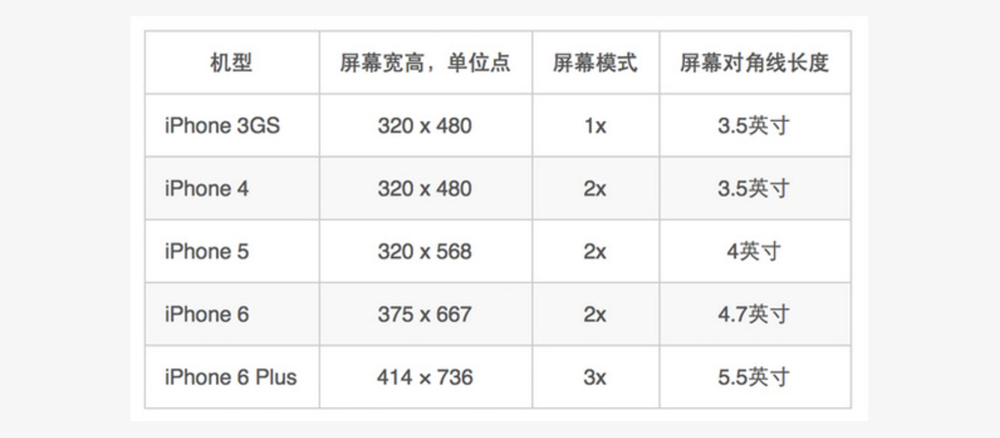
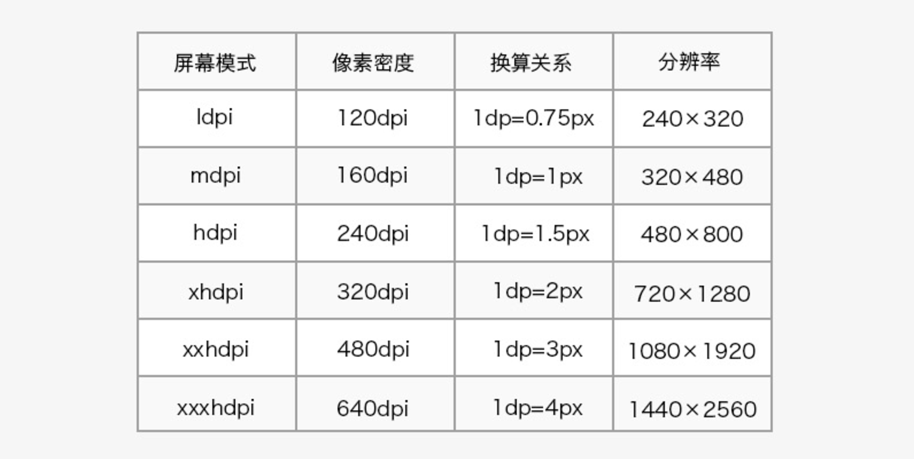

px(Pixel)：像素 误区：误认为所有手机上像素都是一样大的，其实不是，单个像素的大小并不是固定的，不同的手机不一样 ppi(Pixel per inch)：每英寸像素数 计算方法：以iphone6s为例 屏幕尺寸4.7英寸指得是对角线长度 分辨率1334*750指的是竖向有1334个像素，横向有750个像素 ppi = (1334*1334+750*750)开平方 / 4.7 = 326 如果直接使用px，那么10px在不同手机上的显示大小范围是不一样的，低ppi的会大，高ppi的会小 为了解决这样问题，android提出了dp和sp，ios提出了pt android: dp：在160ppi的手机上 1dp=1px，计算方式：1dp = (手机的ppi/160)px 也就是说，设计的时候以160ppi为基础，使用dp进行设计，然后dp这个单位会根据手机的ppi去计算出合适的px数目 剩下的sp和pt都是一样的道理，甚至小程序的rpx，html5的rem都是一样的道理（rem道理好像不一样- -）  